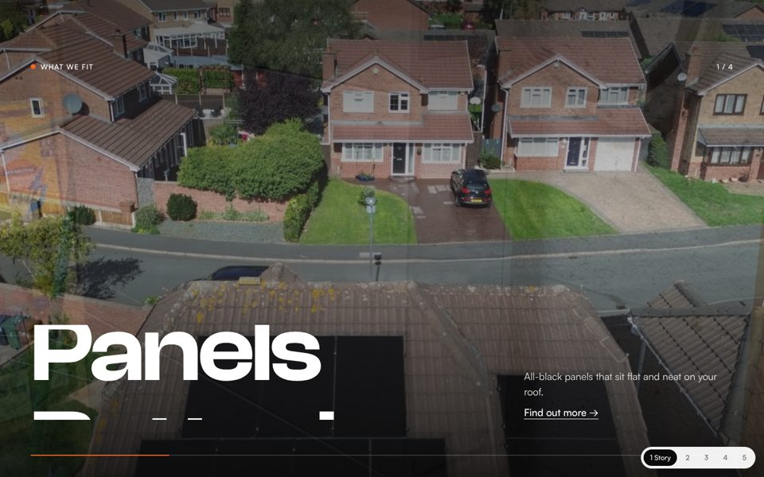
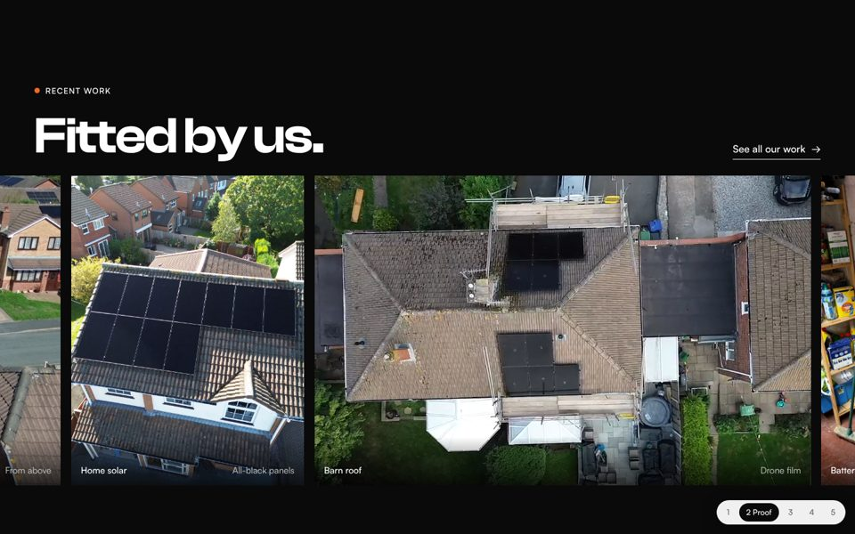
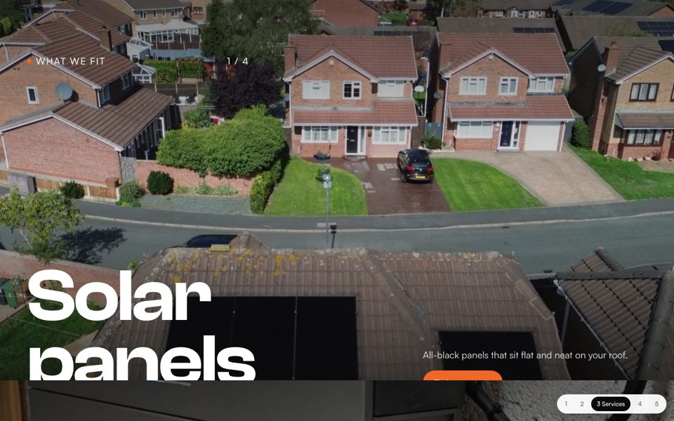
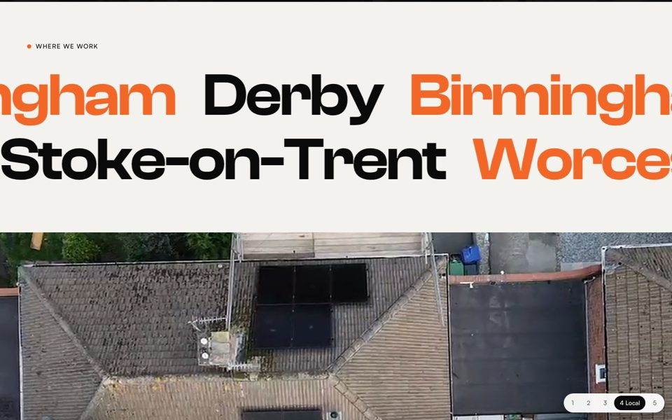
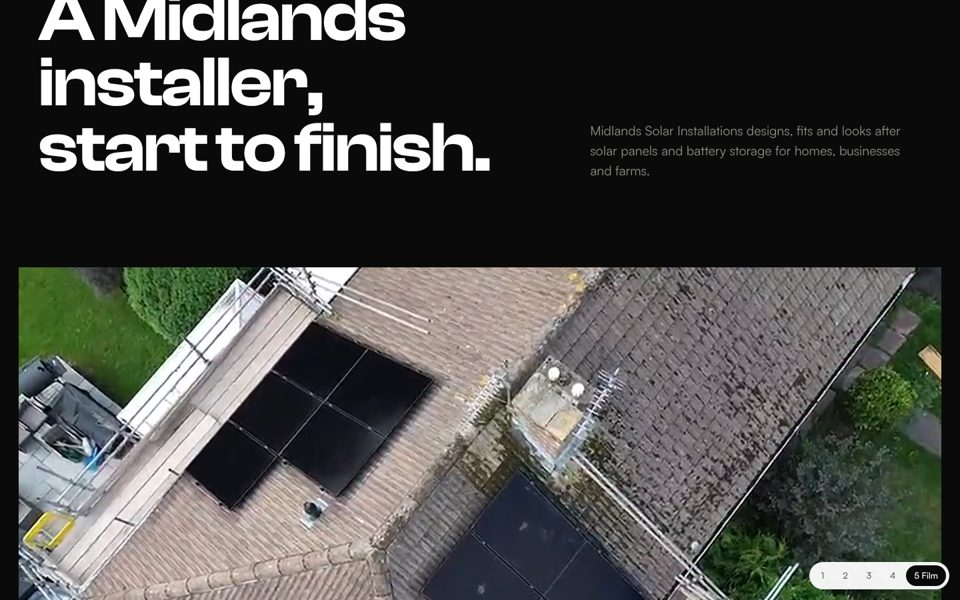

Five mosaic versions.
All five open with the same moving hero. The difference is what comes after it, so scroll each one to the bottom. The numbered switch in the corner jumps between them.

1StoryWho you are first, then what you fit and how a job goes.
2ProofNumbers, jobs and reviews straight after the hero.
3ServicesOpens on what you fit, one full screen each.
4LocalLeads with the towns you cover, then the company.
5FilmAbout-us film that opens out, then full-screen job steps.